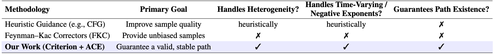
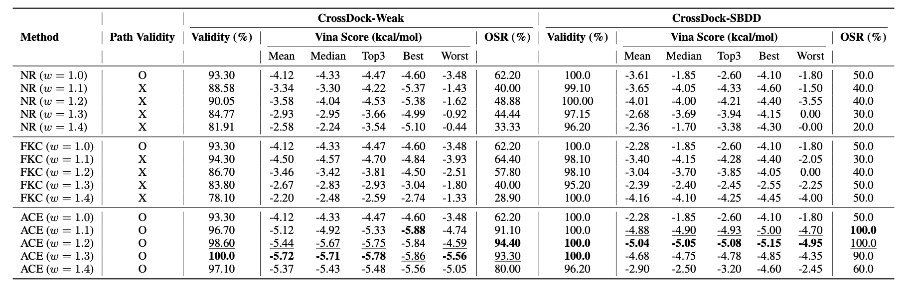
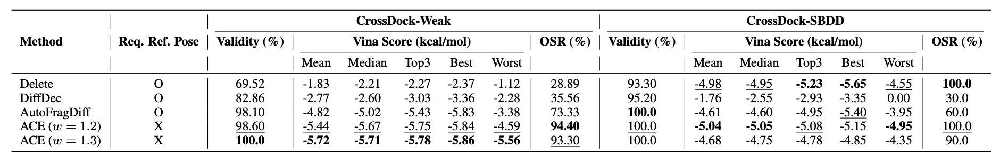

Abstract
Inference-time steering enables pretrained diffusion/flow models to be adapted to new tasks without retraining. A widely used approach is the ratio-of-densities method, which defines a time-indexed target path by reweighting probability-density trajectories from multiple models with positive, or in some cases, negative exponents. This construction, however, harbors a critical and previously unformalized failure mode: Marginal Path Collapse, where intermediate densities become non-normalizable even though endpoints remain valid. Collapse arises systematically when composing heterogeneous models trained on different noise schedules or datasets, including a common setting in molecular design where de-novo, conformer, and pocket-conditioned models must be combined for tasks such as flexible-pose scaffold decoration.
We provide a novel and complete solution for the problem. First, we derive a simple path existence criterion that predicts exactly when collapse occurs from noise schedules and exponents alone. Second, we introduce Adaptive path Correction with Exponents (ACE), which extends Feynman–Kac steering to time-varying exponents and guarantees a valid probability path. On a synthetic 2D benchmark and on flexible-pose scaffold decoration, ACE eliminates collapse and enables high-guidance compositional generation, improving distributional and docking metrics over constant-exponent baselines and even specialized task-specific scaffold decoration models. Our work turns ratio-of-densities steering with heterogeneous experts from an unstable heuristic into a reliable tool for controllable generation.
Understanding ACE
ACE prevents Marginal Path Collapse by adaptively ensuring C(t)>0, replacing unstable steering heuristics with a reliable, guaranteed generative framework.
Marginal Path Collapse & ACE Solution
Figure 1: (a) Constant exponents cause paths to diverge into invalid regions. (b) ACE uses adaptive exponent schedules to guarantee C(t) > 0 for all t, enabling smooth transport to the target. (c) The criterion C(t) stays positive with ACE while constant schedules dip below zero.
Understanding Path Collapse
Figure 2: Even with valid endpoints, the intermediate effective variance can explode, causing Marginal Path Collapse. The ratio becomes non-integrable at certain timesteps.
Applications of ACE
One framework, multiple domains — from drug discovery to image generation
Flexible-Pose Scaffold Decoration
Drug DiscoveryFigure 5: Diffusion Steering Framework for Flexible-Pose Scaffold Decoration. Qualitative results reveal that ACE, successfully modeling the ratio-of-density path, generates valid molecules containing the scaffold topology, while FKC (constant exponent baseline) generates invalid, fragmented molecules as a result of following an ill-defined probability path.
Impact of Path Collapse on Molecules
Drug DiscoveryFigure E.4: Impact of Marginal Path Collapse on Molecular Generation. FKC and ACE are compared on the scaffold-decoration task (ω = 1.3, 500 steps), targeting the same distribution. FKC collapses near the end of sampling (( C(t) < 0 )), resulting in fragmented molecules. In contrast, ACE maintains ( C(t) > 0 ) via a bump correction ( B(t) = 30t(1 - t) ), consistently producing connected, valid molecules.
"A photo of a red chair and a yellow chair and a white teddy bear and a brown dining table"
Figure E.13: Compositional image generation results. Left: base Stable Diffusion 2.1. Right: ACE yields better prompt alignment and layout guidance — completely without additional training or external models. Even in homogeneous settings, ACE achieves +9.57%p improvement on COCO-MIG benchmark.
Key Contributions
Diagnosis: Path Existence Criterion
We derive a rigorous and easy-to-compute criterion that predicts exactly when collapse occurs from the noise schedules and exponents alone.
Path exists ⟺ C(t) > 0 for all t ∈ [0,1)
Solution: ACE Framework
Building on this diagnosis, we extend the Feynman–Kac PDE to support time-varying exponents, dynamically adjusting steering weights throughout generation.
Bump function protocol guarantees C(t) > 0
Method Comparison
Table 1: Comparison of inference-time control methodologies. Unlike heuristics (e.g., CFG) or FKC (Skreta et al., 2025a), our framework provides a principled criterion with adaptive correction (ACE), guaranteeing valid paths even under heterogeneous or time-varying settings.
Quantitative Results
Table 3: Comparison of NR, FKC, and ACE for CrossDock-Weak and CrossDock-SBDD. Higher is better for Validity and OSR; lower (more negative) is better for Vina scores. Best values are bold; second-best are underlined. FKC and ACE share all hyperparameters with the only difference being the addition of the bump function in the exponents of ACE. NR is FKC without resampling.
Table 4: Comparison on CrossDock-Weak and CrossDock-SBDD. Higher is better for Validity and OSR; lower (more negative) is better for Vina scores. Best values are bold; second-best are underlined. O indicates the method requires a reference scaffold pose; X indicates it does not.
BibTeX
@misc{lee2025collapsegenerativepathscriterion,
title={On the Collapse of Generative Paths: A Criterion and Correction for Diffusion Steering},
author={Ziseok Lee and Minyeong Hwang and Sanghyun Jo and Wooyeol Lee and Jihyung Ko and Young Bin Park and Jae-Mun Choi and Eunho Yang and Kyungsu Kim},
year={2025},
eprint={2512.10339},
archivePrefix={arXiv},
primaryClass={cs.AI},
url={https://arxiv.org/abs/2512.10339},
}